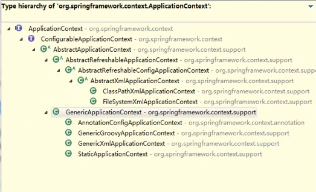

自学Spring框架第二天，今天主要是更加深入的学习了Spring Bean的配置方式（XML形式的）使用方式以及一些注意的点。简而言之就是如何配置一个Bean，属性如何去注入？引用类型如何去注入？集合属性如何去注入，以及Properties属性如何去注入等等。需要注意的是之下的实例代码为了简化使用了 lombok开源工具。
普通属性注入方式
下面总结的是一般的属性注入方式，普通类型以及引用类型，不包括集合类型，其分为三种，最后一种不常用，暂时没有总结。
属性名注入
属性名注入的前提是对应Bean类属性值对应着setter方法，并且创建对象的方式必然通过无参构造方法，因此在Bean类必须保留无参构造方法。首先建立实体类
1 | import lombok.Data; |
注入对应的XML:
1 | <bean id="car1" class="Car"> |
使用property标签注入，并且value字段可以放在外面也可以放在属性的位置上，由于是在XML中写对应的属性值，因此需要注意如果写特殊字符应该使用<!CDATA[..]]>的方式来引用，例如
1 | <property name="brand"> |
最后的输出为：
Car(brand=<AUDI>, corp=my, price=2000.0)
如果需要注入一个引用,使用ref来引用id即可注入,首先创建一个需要注入引用的类
1 | import lombok.Data; |
XML相关配置1
2
3
4<bean id="user" class="User">
<property name="car" ref="car1"/>
<property name="name" value="maoxin"/>
</bean>
打印输出：
User(car=Car(brand=<AUDI>, corp=my, price=2000.0), name=maoxin)
如果不想引用的话，可以创建内部Bean：
1 | <bean id="user" class="User"> |
打印输出：
User(car=Car(brand=audi, corp=corp, price=200.0), name=maoxin)
构造方法注入
构造方法注入方式关注的是构造函数，而识别构造函数的关键是参数的类型，这也是识别重载的关键，因此使用构造方法注入对应的标签有type属性，同时也有index属性来指明位置，这里列一个两者同时使用的例子。
1 | <bean id="new_car" class="Car"> |
当然也可以其在注入引用类型的时候也可以使用ref也可以使用内部Beans
工厂方法注入
待续..
集合属性的赋值
在Spring中对集合类型的赋值有一系列标签的支持，在这里将User类修改以做一下的Demo。
1 | public class User { |
List
填充cars
需要指定<list> 标签, 在标签里包含一些元素. 这些标签可以通过 <value> 指定简单的常量值, 通过<ref>指定对其他 Bean 的引用. 通过<bean> 指定内置 Bean 定义. 通过<null/> 指定空元素. 甚至可以内嵌其他集合.
1 | <bean id="new_user" class="User"> |
Map
Map的概念包含Entry、Key和Value，其均对应着标签或者属性
1 | <property name="maps"> |
Prop
1 | <property name="info"> |
集合信息的外部配置
之前集合的配置都是在内部实现了，现在配置独立的集合对象，使用util标签，其他都差不多
1 | <util:list id="mycars"> |
Spring 的IOC容器简介
在使用Spring读取Bean之前必须先实例化Spring IOC容器，而Spring 提供了两种类型的IOC容器的实现
- Bean Factory IOC容器的基本实现，面向Spring本身
- Application Context 提供了更多的高级特性，面向使用Spring框架的开发者
而ApplicationContext也有具体的实现，最常用的是ClassPathXmlApplicationContext以及FileSystemXmlApplicationContext
